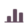
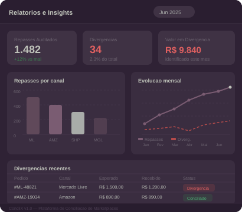
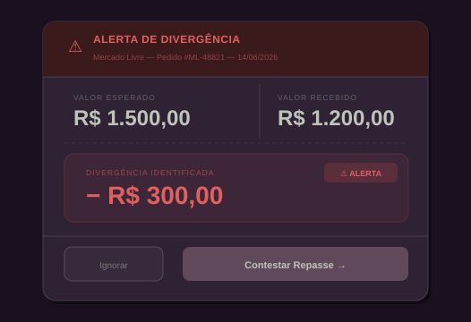

Automatize a conferência dos seus repasses e elimine inconsistências. Foque no crescimento enquanto cuidamos da sua conciliação financeira.
✓ OK Mercado Livre — #MLA2847 — R$ 312,00
⚠ ALERTA Shopee — #SPE9134 — divergência R$ 24,80
✓ OK Amazon — #AMZ5512 — R$ 189,90
✓ OK Magalu — #MGR0074 — R$ 97,50
O ConcliX audita cada centavo liquidado pelas plataformas e dispara alertas quando o repasse não bate.
Agendar demonstraçãoControle financeiro automático 24h. Sem planilhas, sem trabalho manual.
Pare de perder dinheiro. Garantimos que você receba exatamente o que é seu.

Relatórios de todos os canais em um lugar. Decisões baseadas em dados reais.
Marketplaces
ERPs

Menos riscos de erros financeiros e mais estimativa dos seus recebimentos
Agendar uma demonstraçãoElimine horas gastas em planilhas. Sua equipe foca no que importa.
Saiba com precisão quanto vai receber de cada marketplace.
Visibilidade de cada repasse, taxa e desconto das plataformas.
Identifique divergências antes que virem prejuízos. Recupere o que é seu.
Se você enfrenta desafios como:
Nós somos a solução certa para você!
Quero conciliar com esforço zero
Conexão direta com as APIs dos marketplaces. Sem uploads manuais.
Cada repasse é cruzado com sua regra de negócio via ERP.
Alertas automáticos em menos de 2 minutos quando o repasse não bate.
Dashboards completos com insights para decisões estratégicas.
Time técnico disponível para garantir que tudo esteja correto.
Sistema especializado em conciliação de repasses. Monitora continuamente, cruza com as regras do seu ERP e alerta quando há divergências.
Sellers que precisam de controle financeiro preciso sem dedicar horas à conferência manual. Ideal para volumes médio e alto.
Mercado Livre, Amazon, Shopee, Magalu, Casas Bahia e Madeira Madeira.
Auditoria 24/7, identificação de taxas indevidas, relatórios por canal, alertas em tempo real e economia de horas de trabalho manual.
Você recebe um alerta com os dados para contestar junto ao marketplace e recuperar o valor devido.
Sim. Acesso completo à plataforma com dashboards em tempo real e relatórios periódicos por canal.
Não. Nossa equipe cuida de toda a configuração inicial sem necessidade de conhecimento técnico.
Sim. Bling (integração nativa) e TOTVS.
Não. Complementa o trabalho contábil com dados precisos e relatórios estruturados.
Os valores variam conforme volume e complexidade. Entre em contato para uma proposta personalizada.
Não perca tempo conferindo repasses manualmente. O ConcliX faz isso por você! Garanta uma gestão financeira eficiente e segura!
Quero falar com um especialista →Nenhum dado é compartilhado com terceiros. Retorno em até 1 dia útil.